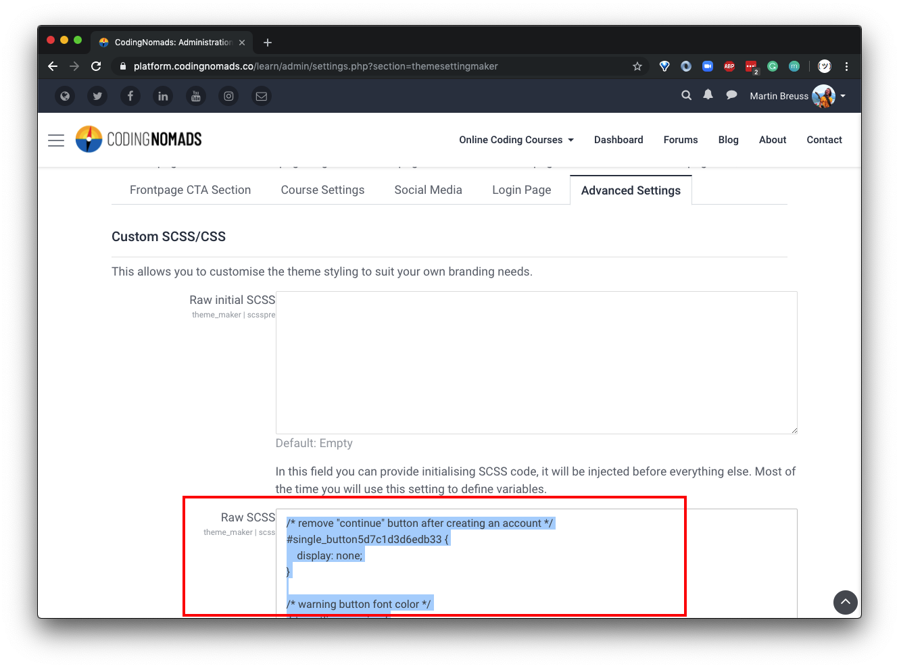
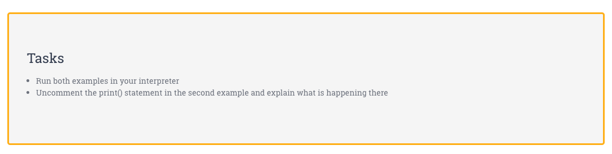

Consistently Styled Course Content¶
Note: Use Markdown to create your course content. It will make most of the below information irrelevant to you. If you feel the need to style more individually, use Bootstrap classes. Bootstrap comes included with the theme we're using. Only if neither fulfills your creative urges, read on for more fine-grained styling.
- Objective
- Where Can I Change the Design?
- Components
- Tags (Dividers)
- Section Dividers
- Assignment Dividers
- Headings
- Resources
- Tasks
- Quotes
- Code Blocks
- Tags (Dividers)
- Formatting
- Code Blocks
- Code font size
- Documentation font size
Objective¶
We want unified and adaptable styling across all courses on the whole site.
- Simple: Simple elements are favored over complex ones, because they are easier to set up and maintain
- Reusable: Use Bootstrap, it's already included. If you need to be more specific, use HTML elements with CSS classes
- Centralized: All custom styling should be done only through the SCSS in Maker Theme
- Maintainable: Through editing styles centrally we can avoid unnecessary effort and potential misalignment
Where Can I Change the Design?¶
You can access the Maker Theme settings at the following platform-internal path:
Site administration / Appearance / Maker / Advanced Settings / Raw SCSS
Design changes for components as well as HTML elements in general can be made centrally in the site-wide SCSS file. Click the "Advanced Settings" tab and add/change CSS inside the second SCSS box.

Components¶
Components to use when creating and editing courses. Add new components in this section.
Section Tags¶
To help students stay on track, add section tags in the "Summary" of each section (Edit Topic)
<h3 class="week week-1">Week 1 - Part 1</h3>
Different sections can have different styles, so add also the week-# class appropriately, e.g.:
<h3 class="week week-3">Week 3 - Part 3</h3>
Dividers¶
To improve the visual flow in a course overview, we add colored bars to break up the course content.

Section Dividers: These can be used to sub-divide a larger section and give it a relevant sub-section heading. Create a "Tag Resource" on the platform, and add the following HTML code in the HTML editor:
<h5 class="section-divider">Section Mini-Heading</h5>
Assignment Dividers: To indicate to students that the following materials require their own input, we use differently-colored dividers for section that consist of instructions for mini-projects, quizzes, etc. You can create such a divider also using the "Tag Resource" and entering the following HTML code in the HTML editor:
<h5 class="section-assignment">Assignments</h5>
Headings¶
Use Editor-provided headings levels:
- "Heading (large)" option creates
<h3>element - "Heading (medium)" option creates
<h4>element - "Heading (small)" option creates
<h5>element
Don't apply any editor styles to your headings. We want to avoid individually bolded headings. We can instead increase heading size, font-weight, etc. centrally through SCSS.
Information¶
Use the Bootstrap alert box alert alert-warning to include information about upcoming course sections. E.g.: "Just read over this for now, we'll dig deeper into it in a later section."
<div class="alert alert-warning" role="alert">
<strong>Note:</strong> Infos about upcoming course sections.
</div>
The alert box can also be used to help visually break up a long piece of content by highlighting an important section.
Resources¶
<div class="jumbotron resources">
<h1>Resources</h1>
</div>
Paste the above HTML snippet into the HTML editor of your resource. Next, switch back to the WYSIWYG editor view and copy-paste your resource links into the body of the jumbotron. Style them as a bullet point list. Result:

Tasks¶
<div class="jumbotron tasks">
<h1>Tasks</h1>
</div>
Same as for Resources.

Quotes¶
Minimal example:
<div class="quote-card">
<p>Quote goes here</p>
<cite><a href="RESOURCE_URL">resource name</a></cite>
</div>

Check out the Maker Theme SCSS for more options.
Code Blocks¶
Wrap code snippets into triple-backticks:
```
print("your code here")
```
Note: Syntax highlighting is currently sometimes broken. This can be annoying and we hope to find a fix that'll actually solve it soon. Currently we live with it being sub-optimal.
In-line Code¶
There is no button for marking a section of text as inline code. Therefore, you need to switch to the HTML editor and wrap in-line code snippets into <code>your_code()</code> tags.
Formatting¶
Collection of style changes and explanations regarding why we did these changes.
Increased Code Font Size¶
Slightly increased code font-size: code {font-size: 1.1em;}. It was hard to read the code before.
Increased Documentation Font Size¶
General font-size was also relatively small, so we slightly increased it.